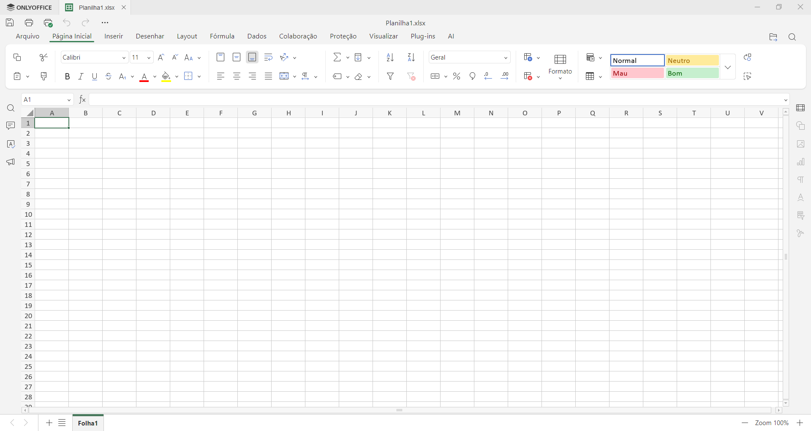
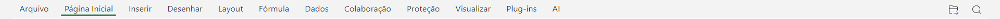
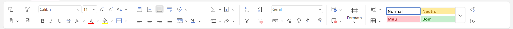
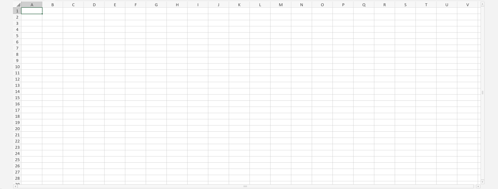
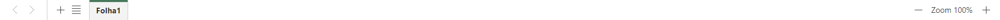

5. Conhecendo a Tela do OnlyOffice Desktop
Você selecionou o OnlyOffice Desktop. Ele traz o melhor dos dois mundos: funciona de forma local e offline no computador, mas utiliza o design moderno baseado em abas parecidas com o Microsoft Excel Desktop.
Veja abaixo a interface padrão do OnlyOffice assim que abrimos um arquivo novo:

A partir da imagem acima, vamos compreender a função de cada uma das suas partes principais:
-
Guias de Menus: Localizadas no topo da tela (Arquivo, Página Inicial, Inserir, Layout, Fórmulas, Dados, Colaboração, Proteção, Visualizar, Plug-ins e AI). Clicar nelas altera dinamicamente todo o conjunto de ferramentas exibido logo abaixo.

-
Faixa de Opções: É a régua de ferramentas que abriga todos os comandos visuais do programa. Ela se modifica conforme a Guia de Menu selecionada.

-
Barra de Fórmulas: A linha horizontal comprida posicionada logo acima da grade de células. Indispensável para visualizar e auditar as funções matemáticas e os textos inseridos nas células.
-
Área de Trabalho da Planilha: A grande matriz quadriculada de linhas e colunas. É neste espaço central que você insere os dados numéricos e textuais para construir tabelas e relatórios.

-
Guias de Planilhas: Abas localizadas na parte inferior esquerda. Permitem gerenciar diferentes planilhas e organizar o seu documento em páginas separadas.
